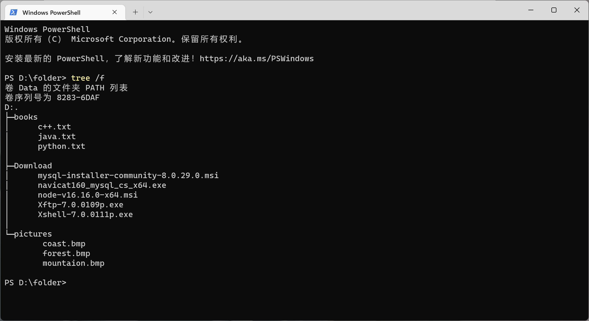

python文件目录遍历
Python os.listdir()
os.listdir() 方法用于返回指定的文件夹包含的文件或文件夹的名字的列表。
它不包括 . 和 … 即使它在文件夹中。
只支持在 Unix, Windows 下使用。
-
语法
1 | os.listdir(path) |
-
参数
- path —— 需要列出的目标路径。
-
返回值
- list | 指定路径文件夹下的文件和文件夹的列表
code:
使用windows下的'tree /f'命令显示D:\folder文件夹下的所有子文件夹及文件

以下以D:\folder为例，演示os.listdir()的实际效果
1 | import os |
output:
1 | ['books', 'Download', 'pictures'] |
Python os.walk()
os.walk() 方法用于通过在目录树中游走输出在目录中的文件名，向上或者向下。
os.walk() 方法是一个简单易用的文件、目录遍历器，可以帮助我们高效的处理文件、目录方面的事情。
在Unix，Windows中有效。
-
语法
1 | os.walk(top[, topdown=True[, onerror=None[, followlinks=False]]]) |
-
参数
- top —— 是你所要遍历的目录的地址。
- topdown —— 可选，为 True，则优先遍历 top 目录，否则优先遍历 top 的子目录(默认为开启)。如果 topdown 参数为 True，walk 会遍历top文件夹，与top 文件夹中每一个子目录。
- onerror —— 可选，需要一个 callable 对象，当 walk 需要异常时，会调用。
- followlinks —— 可选，如果为 True，则会遍历目录下的快捷方式(linux 下是软连接 symbolic link )实际所指的目录(默认关闭)，如果为 False，则优先遍历 top 的子目录。
-
返回值
- generator | 每次返回一个三元组(root,dirs,files)
- root —— 当前正在遍历的这个文件夹的本身的地址
- dirs —— 一个 list ，内容是该文件夹中所有的目录的名字(不包括子目录)
- files —— 同样是 list , 内容是该文件夹中所有的文件(不包括子目录)
- generator | 每次返回一个三元组(root,dirs,files)
code:
1 | import os |
output:
1 | -----root----- |